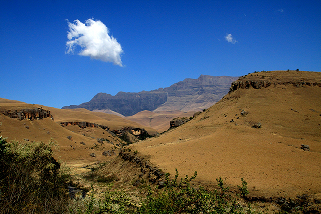
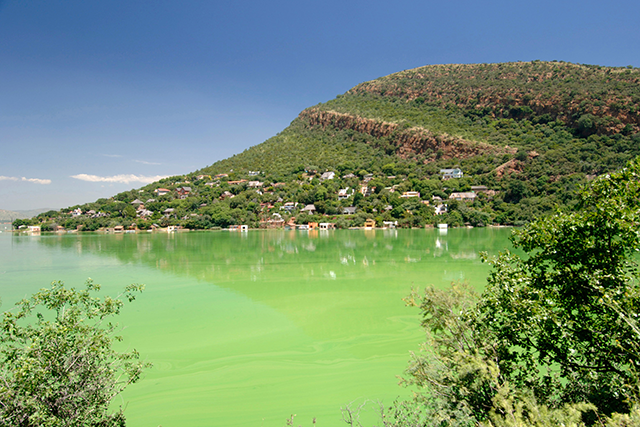
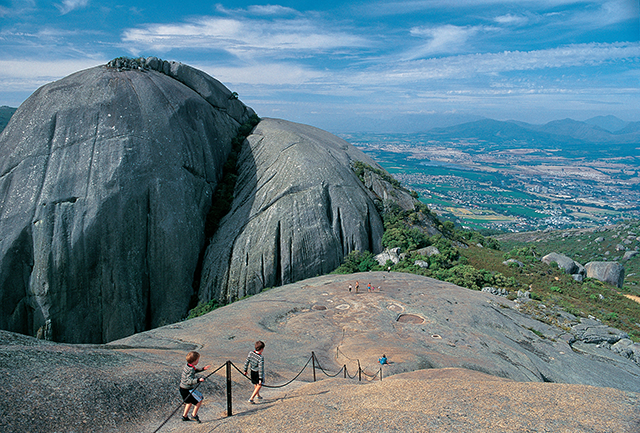

South Africa has a wide variety of geological features, but in Grade 11 we concentrate on those formed by horizontal or inclined rock strata and massive igneous rocks.

Horizontal rock strata near Giant’s Castle in the Drakensberg.

Inclined rock strata at the Hartbeespoort Dam in North West.

Paarl Rock in the Western Cape is an example of an exposed granite dome.